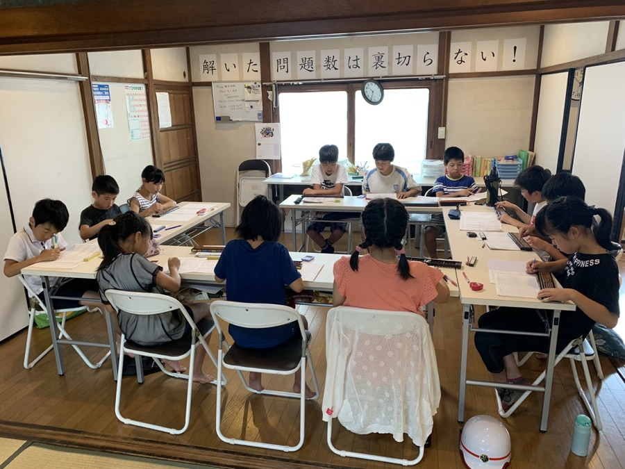
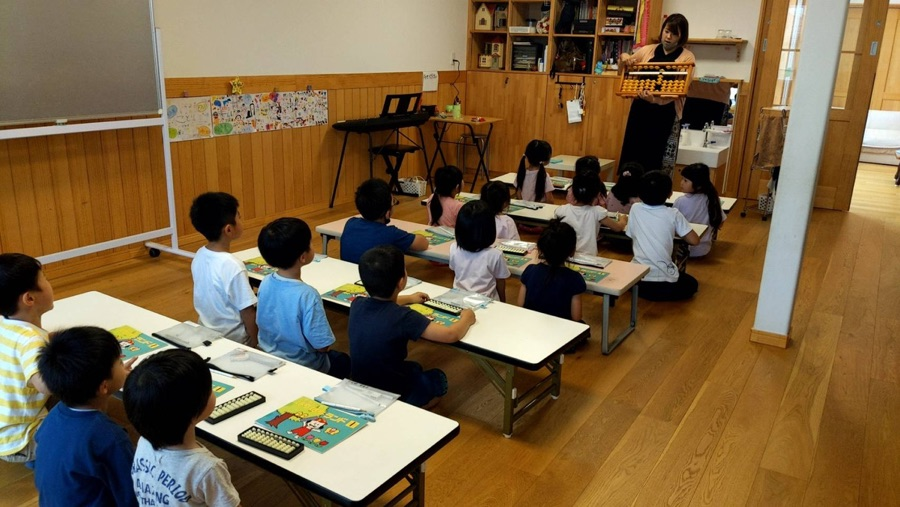
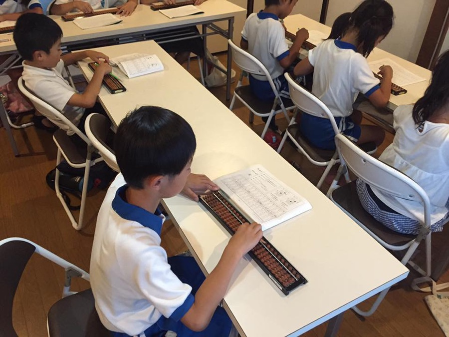

「できた！」が増える、楽珠式
練馬区3教室 ｜ 全国31教室展開中
そのお悩み、楽珠で解決できます。
まずは無料体験会で、お子さまの反応を見てみてください。
「やり抜く力」「集中力」「自分で考える力」—— そろばんを通じて、お子さまの可能性を伸ばします。
一斉授業ではなく、その子の理解に合わせて進みます。初めてのお子さまも、得意なお子さまも安心して通えます。
日珠連・日計連・フラッシュ暗算の3検定に年6回挑戦。合格の積み重ねが「やり抜く力」と自信を育てます。
急な体調不良や行事でも振替できます。他の習い事と両立しやすく、忙しいご家庭でも無理なく続けられます。
朝練・暗算道場・らくたまカップなど、追加費用なしで参加できる特別授業や大会が充実しています。
授業に合わせた解説動画と800ページ以上の問題データで、自宅でも自然に学習習慣がつきます。
欠席・振替連絡はLINEで24時間受付。完全キャッシュレス対応で、保護者の手間を最小限に抑えています。
― 年中〜小2は、特に差がつきやすい時期 ―

デジタル時代だからこそ、アナログな指先トレーニングが有効。神経回路が発達するゴールデンエイジに最適です。

算数が本格的に難しくなる前に、量としての数の感覚（暗算力）を身につけ、苦手意識を防ぎます。

宿題が増える前に「机に向かって集中する時間」を習慣にすることで、自ら学ぶ姿勢が身につきます。
体験会では、そろばんの弾き方はもちろん、
教室の雰囲気や先生との相性を確認していただけます。
お子さまの良いところを見つけ、褒めて伸ばす指導を体感してください。
周りのお友達が真剣に取り組む姿を見て、自然と背筋が伸びる瞬間があります。
簡単な問題からスタートし、解けた時の喜びを一緒に分かち合います。
公式LINEを友だち追加して、
希望の教室・日時を送るだけ。
担当よりご連絡。
最寄りの教室をご案内します。
持ち物は一切不要です。
体験テキストはそのままお土産に。
集中できない子 → 座って「できた！」と報告してくれるように
最初は座っていられるか不安でしたが、先生が優しく、スモールステップで進めてくれるので、嬉しそうに報告してくれます。
指で数えていた → 暗算できるように
買い物に行くと合計金額を計算しようとしたり、遊び感覚で数字に親しめています。振替ができるので他の習い事と両立しやすいです。
目標がなかった → 検定合格で「次もっと上を！」と意欲に
合格するたびに目標を持つようになりました。週1回でも着実に力がついているのを実感します。
算数が苦手そうで心配 → 数字に触れるのが楽しそうに
習い事デビューとして楽珠を選びました。少人数で先生の目が行き届き、家でも「今日は〇ができた」と話してくれます。
計算に時間がかかっていた → スピードと正確さがアップ
宿題の計算も以前よりスムーズに。検定に合格したときの笑顔が忘れられません。続けてよかったです。
机に座る習慣がなかった → 週1回の教室が生活のリズムに
同じ時間に通うことで「そろばんの日」ができ、家庭学習のきっかけにもなっています。
まずはフォームよりご連絡ください。担当者が最寄りの教室をご案内します。
〒179-0085 東京都練馬区早宮４丁目２７−１０−５
（リトルッカ内）
開講日時
リトルッカ内に併設された、アットホームな雰囲気の教室です。落ち着いた環境で集中して学習に取り組めます。
地図を見る〒179-0084 東京都練馬区氷川台３丁目１９−７
井垣ビル 1F（だるまちゃんち・てんぐちゃんち内）
開講日時
地域に愛されるだるまちゃんち・てんぐちゃんちに併設。子どもたちが安心して通える明るい雰囲気の教室です。
地図を見る〒176-0024 東京都練馬区中村１丁目５−３
（ASOBINA Living内）
開講日時
ASOBINA Livingに併設された、開放感あふれる学習空間。子どもたちの好奇心を育む環境が整っています。
地図を見る
そろばんを通じて手に入れた「自信」と「集中力」は、
お子さまの一生の財産になります。
席数には限りがありますので、お早めにお申し込みください。
公式LINEを友だち追加後、体験希望の教室・日時をお送りください